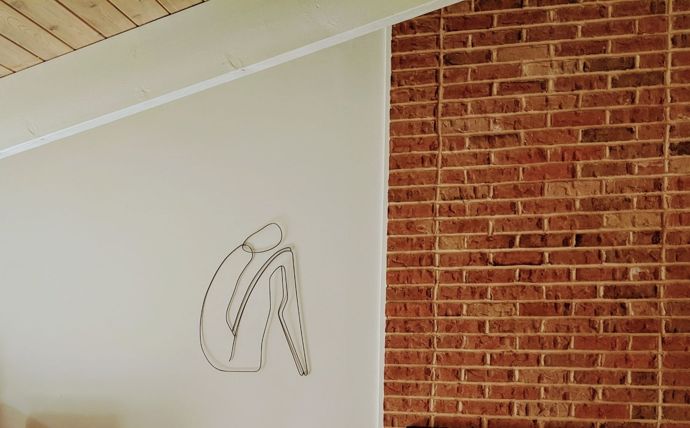

Artist's Statement
My work takes plain cold-rolled steel rods and forms them into textured, primitive, aesthetic images. The images are first found through drawn lines. I don’t start with a strong plan or intention, but instead, draw lines and shapes until I see something interesting or apparent forming. I repeat this process until the final image is found, iterations of erasing lines and refocusing on the point of interest. Oftentimes, there is no final result and the process begins entirely again. The metalwork, that has been cut, bent, and welded, varies from the found image.
I like to trust my eyes and instincts, and not the measuring tape, or try intensely to match the drawn image to the metal. I find more enjoyment in the process this way and welcome the novel variances in character that appear in the metal, sometimes better than the drawing, sometimes not. Welding itself can be a grimy, laborious, hazardous process, but something about watching metal melt and transform before your eyes is endlessly fascinating.
My work presents metal in a form that does not match its intended function. The ability to recognize and seek the re-imagination of identity is beautiful. Human beings are constantly seeking their purpose and trying to align themselves to it, trying to cement their identity. We constantly seek better functionality and in doing so, transform ourselves, sculpt ourselves, in an effort to become happy efficient creatures of form and function.
We find meaning in everything, even in simple lines, reflections on the wall. In finding our identities and purpose, our imagination processes what we see, filling in the blanks of a story, seeing images in lines, and grasping meaning from our surroundings. From what we see, we further use images to convey meaning to others. As I continue with my work I’m interested in the exploration of art as symbol, images that successfully convey a thought, experience, or message.
Bio
I grew up on the eastern shore of Maryland, in Salisbury, with 3 brothers. I was a quiet, introverted kid who enjoyed many hours outside, reading, writing and tinkering with nuts & bolts to make small figurines. Athletics and academics grew in my focus as I grew older, and college in DC was a time for me to grow socially. After college, without a specific intention for my biology degree, I returned home and returned to the childhood idea of learning how to weld in order to make metal art. I took a welding class through a nearby community college and worked for the instructor as a production welder for nearly two years. Having no formal art education, I decided to take a sculpture class at the local, Salisbury, university.
Through many hours of learning and drawing and ideating, I made the leap to begin my venture as a working artist. I have been excited to see the support and response I have already received, mostly through kind words, but also through sales, awards, a feature in BLANK Magazine, a podcast interview with filmmaker David Delaney Mayer, and hopefully non-virtual exhibitions in the near future. I am now also based out of Atlanta, Georgia, where, despite Covid, I am slowly but surely enjoying the art community I have found here. I am incredibly grateful to have wound my way to this point, to be creating in this way, and continuing to further my art.